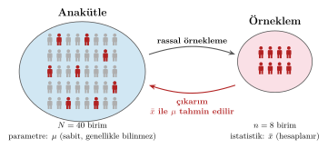
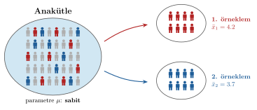
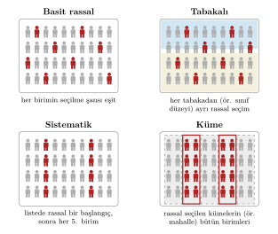
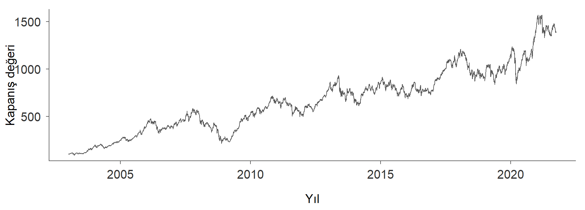
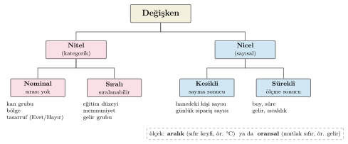
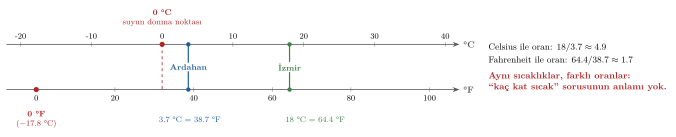

Giriş ve Temel Kavramlar
İstatistik I · 1. Ders · 1 Ekim 2026
Prof. Dr. Hüseyin Taştan
Yıldız Teknik Üniversitesi, İktisat Bölümü
Bu derste
- İstatistik nedir? Betimsel ve çıkarımsal istatistik
- İstatistiksel araştırma süreci
- Anakütle ve örneklem, veri üreten süreç
- Deneysel ve gözlemsel veri, verinin yapısı
- Değişken türleri ve ölçüm düzeyleri
📖 Kitap: Bölüm 1 · Giriş · Bölüm 3 · Temel Kavramlar
İstatistik nedir?
İstatistik nedir?
Verilerin toplanması, düzenlenmesi, özetlenmesi, analiz edilmesi ve yorumlanmasıyla uğraşan bilim dalı.
İstatistik iki ana kola ayrılır:
| Örnek: bir şehirde 400 haneyle yapılan anket | ||
|---|---|---|
| 1 | Betimsel istatistik Elimizdeki veride ne görüyoruz? |
Bu 400 hanenin ortalama geliri kaç? |
| 2 | Çıkarımsal istatistik Verinin ötesine ne söyleyebiliriz? |
Şehirdeki bütün hanelerin ortalama geliri hakkında ne söylenebilir? |
Betimsel ve çıkarımsal istatistik
Betimsel istatistik
- Gözlenen veriyi tablolar, grafikler ve özet ölçülerle anlaşılır hâle getirir
- Anakütlenin tamamı gözlenebiliyorsa (bir şirketin bir yıldaki bütün siparişleri) çıkarıma gerek kalmaz
Çıkarımsal istatistik
- Örneklemden anakütleye genelleme yapar
- Başka 400 hane seçseydik ortalama biraz farklı çıkardı: her sonuç bir belirsizlik içerir
- Belirsizliği ölçmenin dili: olasılık kuramı
- Nedensellik ve öngörü soruları da bu kolun konusudur
Nedensellik ve öngörü
Neden? Reklam harcaması yüksek firmaların satışları da yüksektir. Reklam satışları mı artırıyor, yoksa satışı yüksek firmalar mı reklama daha çok bütçe ayırıyor?
Ne olacak? Bir şirketin gelecek yılki satışları ya da bir ülkenin gelecek yılki enflasyon oranı ne olur?
İkisi de çıkarımsal istatistiğin konusudur. Bir ilişkinin nedensel olup olmadığı, verinin nasıl toplandığına bağlıdır.
Olasılık ve çıkarım: iki ters yön

Olasılık: anakütleyi biliyoruz, örneklemde ne görmeyi bekleriz? · Çıkarım: örneklemi gördük, anakütle hakkında ne söyleyebiliriz?
Olasılık sorusu mu, çıkarım sorusu mu?
- Hilesiz bir para 10 kez atılırsa en az 7 tura gelme olasılığı nedir?
- Bir para 10 kez atılmış ve 7 tura gelmiştir. Paranın hileli olduğu söylenebilir mi?
- Hanelerin %30’unun özel sağlık sigortası var. Rassal seçilen 200 hanenin en az %35’inin sigortalı olma olasılığı nedir?
- Rassal seçilen 200 hanenin 70’i sigortalı. Şehirdeki bütün hanelerin yüzde kaçı sigortalıdır?
Olasılık: (a), (c) — anakütle biliniyor · Çıkarım: (b), (d) — örneklem gözlendi
İstatistik nerelerde kullanılır?
| Alan | Örnek soru | Dönem içinde |
|---|---|---|
| İktisat | Gelir haneler arasında ne kadar eşit dağılıyor? | Sayısal özet ölçüleri |
| İktisat | Kalkınma ile yaşam beklentisi nasıl ilişkili? | Korelasyon |
| İşletme | Bir günde gelen sipariş sayısı nasıl bir dağılıma uyar? | Kesikli dağılımlar |
| Finans | Bir hisse senedi endeksinin günlük getirileri ne kadar risklidir? | Normal dağılım |
| Sosyal bilimler | İllerde yaşam memnuniyeti hangi göstergelerle ilişkili? | Korelasyon matrisi |
| Sağlık | Pozitif çıkan bir tanı testi ne kadar güvenilirdir? | Koşullu olasılık, Bayes kuralı |
İstatistiksel araştırma süreci
- Soru: neyi öğrenmek istiyoruz? “Gençlerde işsizlik ne kadar yaygın?” Kim genç, kim işsiz sayılacak?
- Plan: anakütle, örneklem, değişkenler; deney mi, mevcut kayıtlar mı?
- Veri: toplama, düzenleme, eksik ve hatalı gözlemler
- Analiz: önce tablo, grafik, özet; sonra tahmin ve test
- Sonuç: soru bağlamında yorum, varsayımlar, belirsizlik
Çalışma veriyle değil, soruyla başlar. Plan aşamasındaki hatalar sonradan hiçbir analizle düzeltilemez.
Yapay zeka çağında istatistik öğrenmek
Yapay zeka araçları bir kavramı başka biçimde anlatmakta, bir hata mesajını açıklamakta ya da kod yazmakta yardımcı olabilir. Öğrenmeyi engellemeden kullanmak için:
- Önce kendiniz deneyin ve anlayın. Hazır açıklamayı okuyup “anladım” hissine kapılmak kolaydır, bu his çoğu zaman yanıltıcıdır.
- Yeni bir konuda temkinli olun. Bilmediğiniz bir konuda gelen cevabın doğru olup olmadığını değerlendiremezsiniz.
- Kodu okuyun ve yazın. Bir kodu çalıştırmak, onu anlamak ve değiştirebilmekle aynı şey değildir.
- Çıktıları denetleyin. Yanlış bir sonuç da doğru bir sonuç kadar ikna edici bir dille sunulabilir.
Anakütle ve örneklem
Anakütleden örnekleme

Anakütle ve örneklem
Anakütle (evren, popülasyon)
İlgilendiğimiz birimlerin tamamı. Anakütleyi araştırma sorusu belirler.
Parametre: anakütleyi betimleyen sabit bir değer. Çoğu zaman bilinmez.
Örneklem
Anakütle hakkında bilgi edinmek için seçilen bir alt küme.
İstatistik: örneklemden hesaplanan her değer. Parametreyi tahmin etmekte kullanılır.
| Anakütle | Örneklem | |
|---|---|---|
| Büyüklük | ||
| Özet ölçüsü | parametre (sabit, genellikle bilinmez) | istatistik (örneklemden hesaplanır) |
| Ortalama · Varyans · Standart sapma · Oran | · · · | · · · |
Parametre mi, istatistik mi?
- Üniversitedeki 40000 öğrencinin not ortalaması
- Rassal seçilen 200 öğrencinin not ortalaması
- Bir anketteki 1000 hanenin yüzde kaçının tasarruf yaptığı
- Adrese Dayalı Nüfus Kayıt Sistemi’ne göre Türkiye’de ortalama hane büyüklüğü
Parametre: (a), (d) — birimlerin tamamı · İstatistik: (b), (c) — bir örneklem
İstatistik örneklemden örnekleme değişir

Parametre sabittir, bilmiyor olabiliriz ama değişmez. İstatistik hangi örneklemin çekildiğine bağlıdır.
Temsil gücü ve büyüklük
Büyük örneklem, kötü örneklemeyi düzeltmez
Ortalama hane gelirini yalnızca kredi kartı sahiplerine sorarak tahmin ediyoruz. 500 yerine 50000 kişiye ulaşmak tahmini düzeltmez: kredi kartı olmayan haneler hiç seçilmiyor. Örneklem büyüklüğü belirsizliği azaltır, yanlılığı azaltmaz.
Listesi olmayan anakütleler
Anakütleyi şimdiye kadar listesi yapılabilen birimlerin tamamı olarak düşündük. Her veri bu kalıba uymaz.
- Bir zar 60 kez atılıyor. Zarın “bütün atışlarının” listesi yoktur, zar istendiği kadar yeniden atılabilir.
- Bir fabrikada bugün doldurulan 200 paket tartılıyor. İlgilendiğimiz, makinenin yarın ve gelecek ay dolduracağı paketlerdir.
- BIST 100’ün 2003-2021 arasındaki günlük getirileri gözleniyor. İlgilendiğimiz, getirilerin nasıl oluştuğudur.
Bu örneklerde veriyi, tekrar tekrar işleyebilen bir mekanizmanın ürettiğini düşünürüz. Bu mekanizmaya veri üreten süreç denir ve anakütlenin yerini alır. Zarda 6 gelme olasılığı ya da getirilerin standart sapması gibi parametreler sürecin özellikleridir.
Aynı veri, iki farklı soru
Dünyadaki bütün ülkelerin verisi elimizde olsun.
“Yaşam süresi en uzun ülke hangisi?”
Elimizdeki veri anakütlenin kendisidir. Betimlemek yeterlidir.
“Gelir arttıkça yaşam süresi nasıl değişir?”
İlgilendiğimiz, bu ülkelere özgü sayılar değil ilişkiyi üreten süreçtir. Ülkeler o sürecin gözlemleridir.
Veri üreten süreç, anakütle kavramının genelleştirilmesidir. Hangi bakışın uygun olduğunu araştırma sorusu belirler. Bir olasılık dağılımı ise veri üreten sürecin matematiksel modelidir.
Örnekleme yöntemleri

Örnekleme yöntemleri: özet
| Yöntem | Nasıl seçilir? | Örnek |
|---|---|---|
| Basit rassal | büyüklüğündeki bütün örneklemlerin seçilme olasılığı aynı | Öğrenci listesinden bilgisayarla 100 kişi |
| Tabakalı | Anakütle homojen gruplara ayrılır, her gruptan rassal seçilir | Her sınıf düzeyinden ayrı ayrı |
| Sistematik | Rassal bir başlangıçtan sonra her ’inci birim | , : ; 10, 30, 50, … |
| Küme | Önce kümeler (mahalle, okul) rassal seçilir, sonra içindeki birimler | Birim listesi yok, küme listesi var |
Veri türleri
Deneysel veri: rassal atama

Yeni bir öğretim tekniği başarıyı artırıyor mu? 80 öğrenci rassal olarak ikiye ayrılır.
| Grup | Ön ölçüm | Son ölçüm | Değişim |
|---|---|---|---|
| Kontrol () | 62.1 | 64.3 | |
| Deney () | 61.8 | 71.5 |
- Başlangıçta gruplar benzer: rassal atamanın sonucu
- Fark: puan, yeni tekniğe atfedilebilir
Gözlemsel veri: ilişki nedensellik değildir
- Araştırmacı müdahale etmez, mevcut durumu gözler: anketler, idari kayıtlar
- Gruplar rassal oluşmadığı için gözlenen ilişkinin arkasında üçüncü bir değişken olabilir
Eğitim düzeyi yüksek olanların geliri de yüksek. Eğitim geliri artırıyor mu? Başka hangi açıklamalar olabilir?
Aile geçmişi, yetenek gibi gözlenmeyen etkenler hem eğitimi hem geliri etkileyebilir. Nedensel iddia verinin kendisinden değil, araştırma tasarımından doğar.
Verinin yapısı: zaman boyutu
| Yapı | Tanım | Örnek |
|---|---|---|
| Yatay kesit | Bir zamanda, çok sayıda birim | Bir yıldaki hanehalkı bütçe anketi |
| Zaman serisi | Bir birim, ardışık dönemler | Aylık enflasyon, günlük BIST100 |
| Birleştirilmiş yatay kesit | Farklı yıllarda farklı birimlerden kesitler | Her yıl yeni hanelerle yapılan anketler |
| Panel | Aynı birimler, birden çok dönem | Ülkelerin yıllara göre yaşam beklentisi |
Zaman serisi örneği

BIST100 endeksinin günlük kapanış değerleri, 2003-2021. Zaman serisinde gözlemlerin sırası anlamlıdır ve değiştirilemez.
Değişkenler ve ölçüm düzeyleri
Değişken türleri

Değişken türleri: tanımlar
Nicel (sayısal)
- Kesikli: sayma sonucu, sayılabilir değerler. Hanedeki kişi sayısı, günlük sipariş sayısı
- Sürekli: ölçme sonucu, bir aralıktaki her değer. Boy, süre, gelir
Nitel (kategorik)
- Nominal: sırası olmayan kategoriler. Kan grubu, bölge, tasarruf (Evet/Hayır)
- Sıralı (ordinal): sıralanabilen kategoriler. Eğitim düzeyi, memnuniyet
Pratik soru: iki değer arasında üçüncü bir değer bulabiliyor musunuz? Evet → sürekli, hayır → kesikli.
Aralık ölçeği: fark anlamlı, oran değil
Bazı illerin uzun dönem yıllık ortalama sıcaklığı: İzmir 18 °C, Ardahan 3.7 °C.
“İzmir, Ardahan’dan yaklaşık 5 kat sıcaktır” denebilir mi? Aynı sıcaklıkları Fahrenheit ile yazıp oranı yeniden hesaplayın:

Neden oran anlamsız?
“Kaç kat sıcak” sorusunun yanıtı yoktur
Sıcaklık değişmedi, yalnız ölçek değişti; oran ise 4.9’dan 1.7’ye indi. Oranın ölçeğe göre değişmesi, sıfır noktasının keyfi olmasından kaynaklanır: 0 °C sıcaklığın yokluğu değildir.
| Ölçek | Sıfır | Fark anlamlı mı? | Oran anlamlı mı? | Örnek |
|---|---|---|---|---|
| Aralık | keyfi | ✓ | ✗ | °C, °F cinsinden sıcaklık |
| Oransal | mutlak (yokluk) | ✓ | ✓ | gelir, boy, süre |
İzmir Ardahan’dan 14.3 °C daha sıcaktır (fark). Geliri 20000 TL olan hane, 10000 TL olan haneden 2 kat fazla kazanır; TL yerine bin TL ya da dolar ile ölçsek de oran aynı kalır.
Ölçüm düzeyleri: hangi işlem anlamlı?
| Ölçüm düzeyi | Örnek | Anlamlı işlemler | Uygun özet ölçüleri |
|---|---|---|---|
| Nominal | tasarruf, bölge | eşit mi, farklı mı | frekans, oran, mod |
| Sıralı | gelir grubu, memnuniyet | + sıralama | + medyan, kartiller |
| Aralık | °C cinsinden sıcaklık | + fark alma | + ortalama, standart sapma |
| Oransal | gelir, boy, süre | + oran alma | + değişkenlik katsayısı |
Sayıyla kodlanmış kategori sayı değildir
Sigara içilen hane = 1, içilmeyen = 2 diye kodlanabilir; bu sayıların ortalaması anlamsızdır.
Bir veri kümesini okumak
Kitaptaki hane örneklemi, R çıktısı:
'data.frame': 400 obs. of 5 variables:
$ hane_kisi_sayisi : num 3 5 3 3 4 1 7 3 8 4 ...
$ aylik_gelir : num 1687 2877 8147 1579 5102 ...
$ tasarruf : chr "Hayır" "Hayır" "Hayır" "Hayır" ...
$ saglik_merkezi_erisim_olcek: chr "Kolay" "Kolay" "Kolay" "Orta" ...
$ sigara : num 1 2 1 1 2 2 1 1 1 1 ...Her değişken nicel mi nitel mi? Kesikli mi sürekli mi? Hangi ölçüm düzeyinde?
Gelecek hafta
Histogram ve frekans dağılımları, kategorik değişkenlerin özetlenmesi, merkezi eğilim ölçüleri
- Okuyun: Bölüm 3 · Temel Kavramlar, Bölüm 4 · Frekans Dağılımları ve Grafikler
Rve RStudio’yu kurun: R’a giriş sunumu ve Bölüm 2
İstatistik I · YTÜ İktisat Bölümü